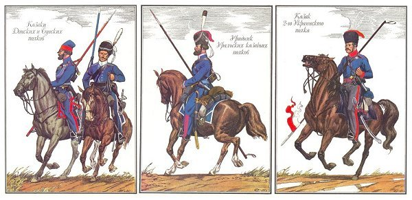

Ivan the Terrible annexed Astrakhan in 1556, which led to the formation of the Astrakhan Cossacks.
Scan me
Scan me
Scan me
Prepared: Homa
History and Culture of the Cossacks
Formation
The Volga River was important for trade and required protection from attacks.
By 1817, the Astrakhan Cossack Host was officially established.


Their main duty was protecting borders and river navigation.
Lifestyle & Culture
Fishing was the main occupation of Astrakhan Cossacks.
Every Cossack had a horse and was ready for military service.
Houses were made of clay and painted in bright colors.
Cossack weddings lasted several days and included many traditions.
Songs and folklore were an important part of their culture.
Wars & Tragedy
Astrakhan Cossacks fought in the War of 1812 and reached Paris.
They defended the Caspian coast during the Crimean War.
During World War I, they fought on multiple fronts.
Many Cossacks opposed Soviet power during the Civil War.
In the 20th century, Cossacks faced repression and deportation.
Modern Revival
The revival of Cossacks began in the late 1980s.
Today, Cossacks help maintain public order.
They protect nature and fight illegal fishing.
Cossacks take part in patriotic education of young people.
Cultural festivals help preserve traditions.